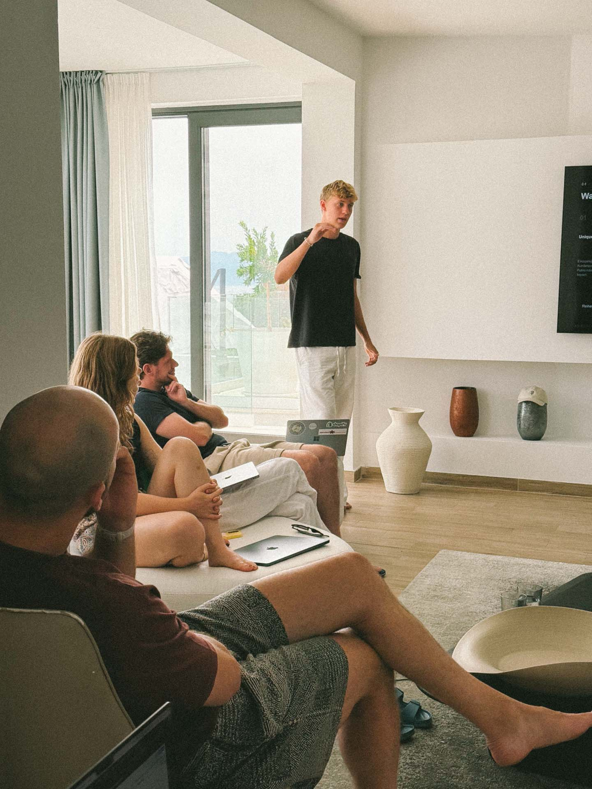
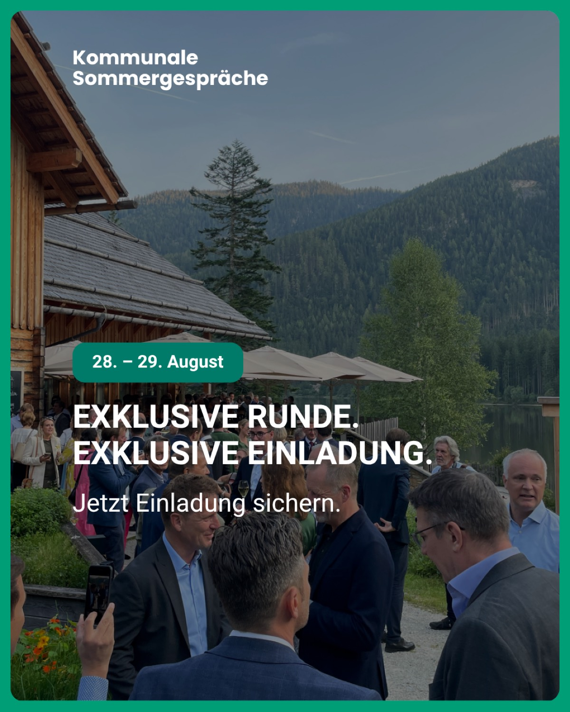
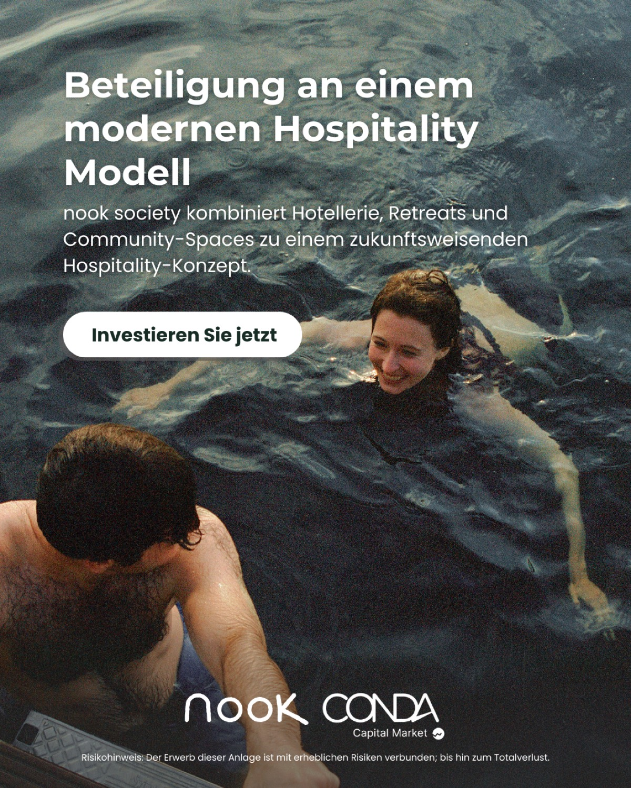
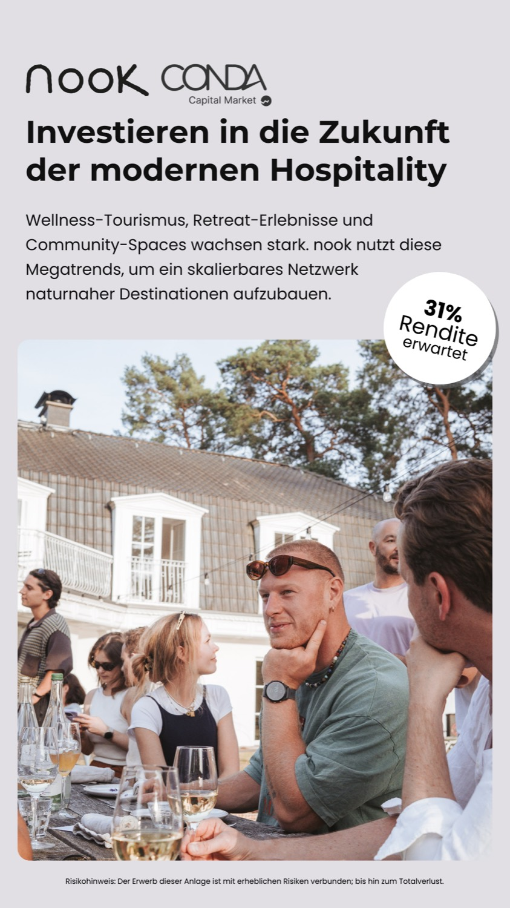
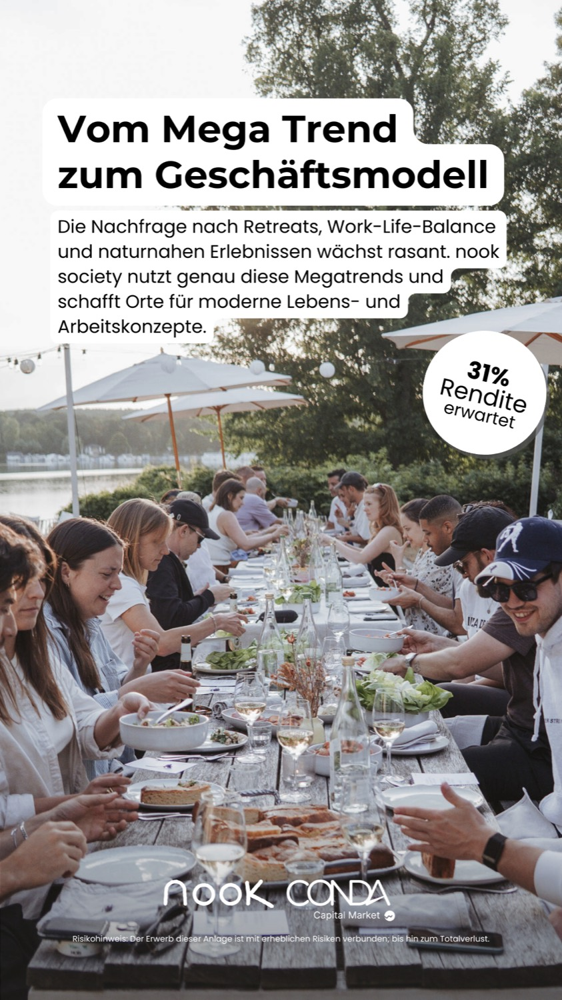
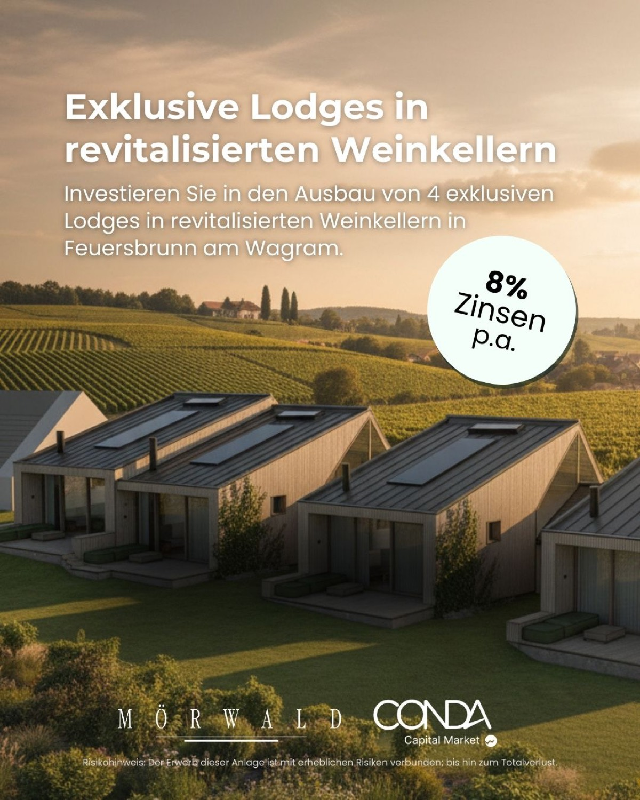
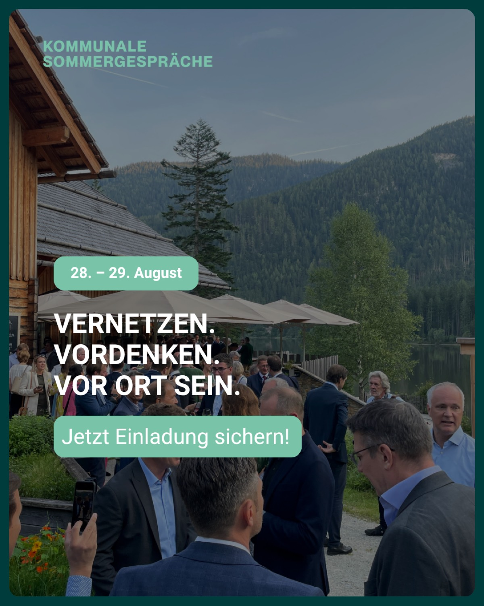
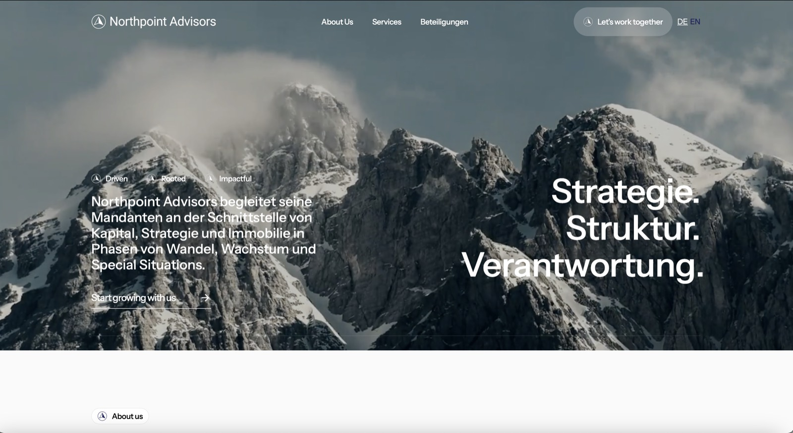

Struktur schlägt Bauchgefühl.
Vom Einzelprojekt zur Plattform: Funnel, KPI-Logik und Attribution, die Entscheidungen tragen.
Wir bauen die Struktur, bevor wir Budget bewegen: Funnel-Architektur, KPI-Definitionen, die vorab feststehen, und eine Attribution, die jeden Euro zurechenbar macht. Erst dann wird skaliert.
Vom ersten Kontakt bis zur Zeichnung: Ein Investoren-Funnel übersetzte € 36k Google-Budget in € 4,65 Mio. zurechenbares Kapital.
- Journey vom Lead bis zum Abschluss
- Vertrauensaufbau Schritt für Schritt
- CRM-Nurture für lange Wege
- Klare Übergaben an Vertrieb
Die KPI-Definition vorab ist die halbe Miete: Kosten je Investor, Ø Investment, Volumen, ROAS, sauber zugerechnet.
- KPI-Set je Geschäftsmodell
- Server-side Tracking
- Zurechenbarkeit statt Zählweisen
- Dashboards, die Entscheidungen tragen
Eigennutzer und Anleger sind zwei Märkte: Wer beide gleich anspricht, verliert bei beiden.
- Segment-Logik & Botschaften
- Message-Testing je Zielgruppe
- Preis- und Angebotslogik
- Positionierung gegen den Markt
Projektübergreifendes Lernen macht jedes weitere Projekt günstiger: gleiches Budget, viermal mehr Kapital.
- Gemeinsame Datenbasis
- Wiederholbare Test-Mechanik
- Portfolio-Sicht auf CPL und ROAS
- Skalierung mit System



Bevor der erste Euro läuft, steht fest, woran der Erfolg gemessen wird. Das verhindert schöngerechnete Kampagnen.
Im Finance zählt der Cost per zugerechnetem Kapital, nicht der CPL: Aufklärung, Vertrauen, Handlung.
Ein Paid-Test über € 278.727 brachte null Zeichnungen: Er wurde gestoppt, das Budget umgeschichtet. Genau dafür ist Struktur da.
Erst die Struktur. Dann das Budget.
Erst die Struktur, dann das Budget: Strategie-Session in Wien.
Den Fall im Detail
Ein Mandat. Von der Struktur zur Zahl.
Ein Immobilien-Investment-Mandat, Stufe für Stufe: das eingesetzte Budget, die Struktur, die Zurechnung, das eingesammelte Kapital.
Gleicher Spend, anderes Ergebnis: Der Beweis liegt im Vorher-Nachher. Struktur schlägt Einzelkampagne.
Für ein Investment-Mandat ist das kein großer Hebel, sondern ein kleiner. Genau deshalb musste die Reihenfolge stimmen.
Nicht mehr Kampagnen, sondern eine Reihenfolge: Aufmerksamkeit, Vertrauen, Termin. Jede Stufe mit eigener Botschaft je Zielgruppe.
Bei Anlegern schlug der Service-Angle die Nachhaltigkeits-Story um das 2,3-Fache. Gemessen, nicht vermutet.
€ 4,65 Mio. eingesammeltes Kapital, auf die Kampagne zugerechnet. Das ist ein Return von 129 zu 1.
















Was Strukturwirklich bewegt.
Beide Zahlen kommen aus demselben Mandat, links die Kosten je Investor, rechts der Return on Ad Spend. Das Budget blieb nahezu gleich, geändert hat sich die Reihenfolge.
Nahezu gleiches Budget, andere Struktur: Aus 16 Investments wurden 50, die Kosten je Investor fielen um 69 Prozent.

Aus dem Mandat · Auftritt mit Funnel-Logik
Vier Rollen, die an der Struktur bauen.
Strategie ohne Umsetzung ist eine Folie. Wer die Reihenfolge festlegt, verantwortet auch die Zahl am Ende.

Legt die Reihenfolge fest und verantwortet die Zahl, die am Ende im Report steht.
Führt die Strategie-Session und übersetzt Geschäftsziele in messbare Stufen.
Baut die Struktur in die Konten und misst, ob die Reihenfolge trägt.

Bringt die Sicht des Vertriebs ein: Welche Anfrage ist wirklich eine Anfrage.
„Gleicher Spend, anderes Ergebnis. Der Beweis liegt im Vorher-Nachher, nicht in der Präsentation.“
Wir liefern keine Strategie-Folien zum Abheften. Wir legen die Reihenfolge fest, setzen sie um und rechnen sie nach.
Der Fit entscheidet.Nicht die Vorlage.
Wir liefern keine Strategie zum Abheften. Wir setzen sie um und verantworten die Zahl am Ende, als verlängerte Marketingabteilung. Das geht nur mit Mandaten, bei denen die Zusammenarbeit trägt, deshalb prüfen wir den Fit vorher, in beide Richtungen.
- Es gibt ein Ziel in Zahlen: Kapital, Einheiten, Anfragen
- Sie wollen die Umsetzung mit derselben Hand, nicht nur das Konzept
- Mehrere Zielgruppen mit unterschiedlichen Botschaften
- Der Vertrieb ist bereit, Anfragen zeitnah zu bearbeiten
- Es soll eine Präsentation für ein Gremium werden
- Die Umsetzung übernimmt später jemand anderes
- Das Ziel ist Bekanntheit ohne messbare Handlung
- Entscheidungen brauchen mehrere Monate Vorlauf
Die ehrlichenFragen.
Was uns vor dem Start wirklich gefragt wird, und was wir antworten.
Von der Anfrage zum Fahrplan.
Status quo, Zielbild, KPI-Logik: In einer strukturierten Session zeigen wir, wo Ihr Funnel Kapital liegen lässt und was zuerst gebaut gehört. Danach entscheiden Sie.
Risikoumkehr: Geht die Strategie in ein Umsetzungs-Mandat über, koppeln wir die Vergütung an messbare Ergebnisse. Wir gewinnen nur, wenn Sie gewinnen.
- Strategie-Session mit Zielgruppen, Reihenfolge und Botschaften
- Funnel-Architektur je Zielgruppe, inklusive Messpunkte
- Fahrplan auf einer Seite: Reihenfolge, Erwartung, erster Schritt
- Auf Wunsch die Umsetzung mit derselben Hand
Womit können wir helfen?
Auswahl treffen, weiter klicken, und Ihre Anfrage ist vorformuliert.